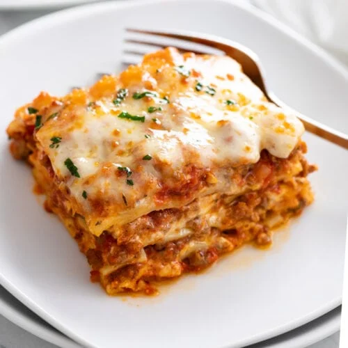

Lasagna

Popular Lasagna recipe
A popular lasagna recipe features layers of savory meat sauce made with ground beef, tomatoes, garlic, and herbs,
paired with ricotta cheese mixed with egg and seasonings. The dish is assembled with cooked lasagna noodles,
meat sauce, ricotta mixture, and plenty of mozzarella and Parmesan cheese. It’s baked until bubbly and golden,
creating a rich and comforting meal that’s perfect for feeding a crowd.
Ingredients
- Lasagna noodles (12 sheets)
- Ground beef (1 lb or 450g)
- Ground pork (optional, 1/2 lb or 225g)
- Onion (1, chopped)
- Mozzarella cheese (2-3 cups, shredded)
- Crushed tomatoes (1 can, 28 oz or 800g)
- Tomato paste (2 tbsp)
- Fresh spinach (optional, 1-2 cups)
Steps
- Preheat the oven to 375°F (190°C).
- Cook the noodles: Boil lasagna noodles according to the package instructions. Drain and set aside.
- In a large skillet, cook 1 lb ground beef (and 1/2 lb ground pork, if using) over medium heat until browned.
- Add 1 chopped onion and 2-3 minced garlic cloves; cook for 2-3 minutes until softened.
- In a separate bowl, combine 15 oz ricotta cheese, 1 egg, 1-2 cups chopped fresh spinach (optional), and salt
& pepper to taste.
- Add a layer of the ricotta mixture, then top with shredded mozzarella cheese and grated Parmesan cheese.
- Repeat the layers: meat sauce, noodles, ricotta mixture, mozzarella, and Parmesan until all ingredients are
used, finishing with a layer of meat sauce and cheese on top.
- Let the lasagna rest for 10 minutes before cutting and serving.
Home